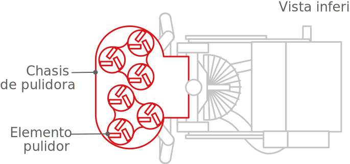

Compuesto por
Dispositivo de control
Cuenta con:
Un interruptor de encendido entre la fuente eléctrica y el ventilador
Un contador de tiempo
Un interruptor de apagado por emergencia entre la fuente eléctrica y el interruptor de encendido
Permite capturar elementos contaminantes sólidos que desprende el elemento pulidor de superficies para evitar que lleguen a las vías áereas de las personas ubicadas en el ambiente circundante.
Inventores
Patente
Propietario
Para complementar la información con modelos 3D en realidad aumentada


Durante el recorrido de esta página
te encontra rás con este ícono:

Abre la app y apunta la cámara hacia
la pantalla de esta manera:

Cuenta con:
Un interruptor de encendido entre la fuente eléctrica y el ventilador
Un contador de tiempo
Un interruptor de apagado por emergencia entre la fuente eléctrica y el interruptor de encendido
El elemento pulidor va conectado a un primer motor y este a su vez se monta sobre un chasis, cuenta con dos discos conectados, los cuales giran de manera contraria entre ellos
El ventilador se encarga de generar la succión con la fuerza requerida para evitar la sedimentación en las campanas y almacenar los residuos exitosamente
Elemento de captación de gases contaminantes sólidos, líquidos, y/o gaseosos que genera la succión
Existen dos o más campanas ubicadas en varios puntos estratégicos para captar la mayor cantidad de contaminantes
El ciclón de alta eficiencia conecta las campanas y el recolector de partículas finas
Al no tener partes móviles implica bajos costos de mantenimiento y operación
La espiral ascendente lleva consigo gas y partículas finas
La espiral descendente arrastra las partículas sólidas gruesas
Las campanas, el ventilador, el ciclón y el colector de partículas finas están conectados por unas tuberías flexibles que transportan la captación de residuos
Compuesto por un filtro de talegas y un filtro de cartuchos dispuestos en serie
1
Evita que los contaminantes sólidos lleguen a las vías áereas de las personas ubicadas en el ambiente circundante de la pulidora
2
Evita que las particulas gruesas generen defectos como rayaduras o hendiduras después del proceso de pulimiento del suelo.
3
Facilita los trabajos de limpieza después de las operaciones